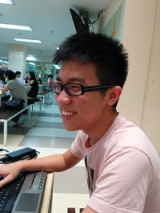
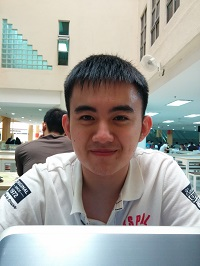

Management Team
Lewis Chan and Alex Phang founded L&A in August 2010. Since then, the company has grown to become a strong company worldwide, with a management team that represents some of the most experienced professionals in the industry.
Executive Officers
Lewis Chan and Alex Phang founded L&A in August 2010. Since then, the company has grown to become a strong company worldwide, with a management team that represents some of the most experienced professionals in the industry.
Executive Officers
Lewis Chan
| As L&A’s chief executive officer, Lewis is responsible for L&A’s day-to-day-operations, as well as leading the company’s product development and technology strategy. He co-founded L&A with Alex Phang in 2010 while pursuing a Bsc at Sunway University, and is the first CEO. Larry holds a bachelor’s degree in engineering from the University of Michigan, Ann Arbor and a master’s degree in computer science from Stanford University. He is a member of the National Advisory Committee (NAC) of the University of Michigan College of Engineering, and together with co-founder Sergey Brin, Larry was honored with the Marconi Prize in 2004. He is a trustee on the board of the X PRIZE, and was elected to the National Academy of Engineering in 2004. |  |
Alex Phang
| Alex Phang co-founded L&A in 2010. Today, he directs special projects. Now, Alex serves as the president of technology, where he shared responsibility for the company’s day-to-day operations with Lewis Chan. Sergey received a bachelor’s degree with honors in mathematics and computer science from the University of Maryland at College Park. He is currently on leave from the Ph.D. program in computer science at Stanford University, where he received his master’s degree. Sergey is a member of the National Academy of Engineering and a recipient of a National Science Foundation Graduate Fellowship. |  |